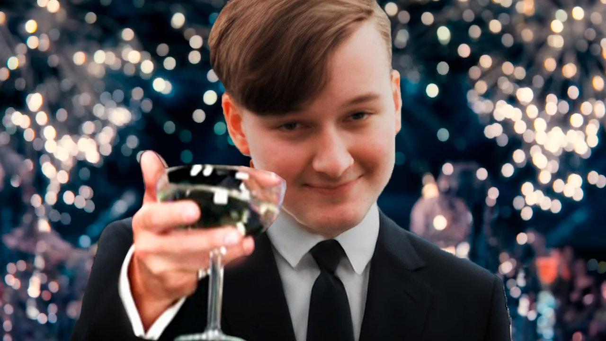

Olen 20-vuotias valmistunut elokuva- ja tv-alan ammattilainen, joka toimii nykyisin freelance-yrittäjänä. Toteutan videotuotantoja ja valokuvauskeikkoja.



Yritys
Tarvitsetko ammattimaista audiovisuaalista materiaalia? Toteutan laadukkaita, tehokkaita ja edullisia tuotantoja ympäri Suomea. Olipa kyseessä sosiaalisen median video, hääkuvaus, yritysvideo, haastattelu, musiikkivideo tai jotain ihan muuta.
Kalusto
Tuotantokalustoni on modernia ja mahdollistaa teknisesti korkealaatuisen materiaalin tuottamisen. Pääkameroina ovat Nikon ZR -järjestelmäkamerat, jotka pohjautuvat RED-elokuvakameran teknologiaan. Näillä kameroilla onnistuu 6K- ja 4K-kuvaus. Lisäkameroina GoPro-actionkamerat villeihin kulmiin.

Käytössäni on myös aitoja 2000-luvun alun videokameroita, joilla tallennetaan nostalgista ja aitonaista materiaalia. Näissä laitteissa on elektroninen ja digitaalinen zoom sekä infrapunakuvaus (Night Vision), jolla voi kuvata pimeässäkin.